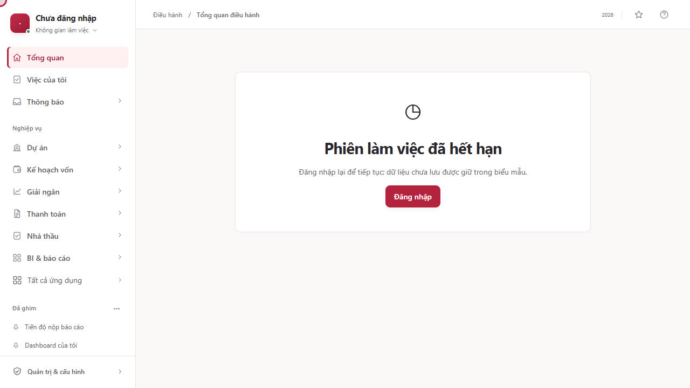
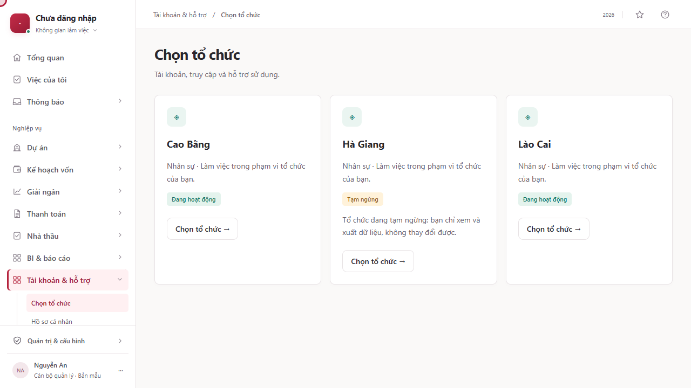
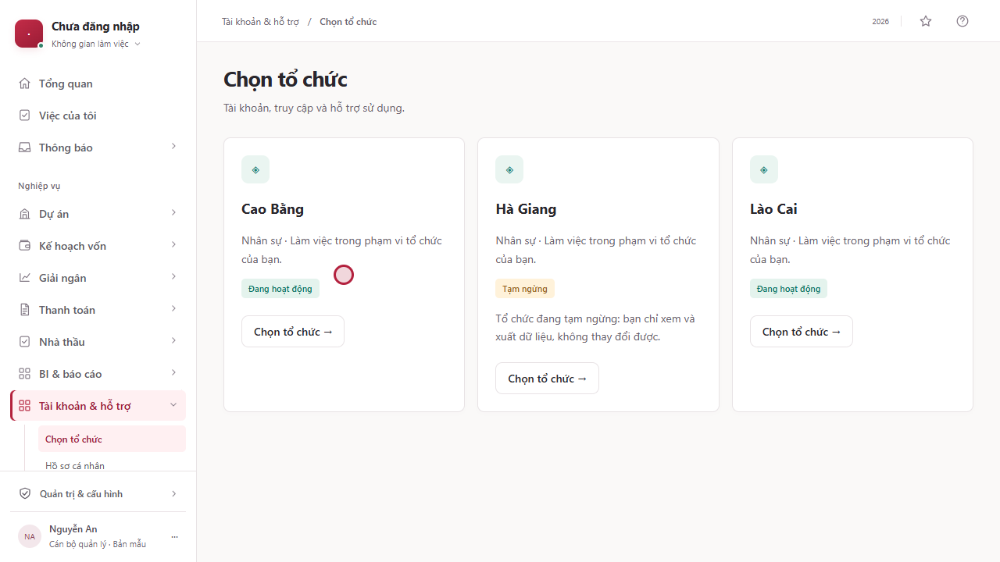
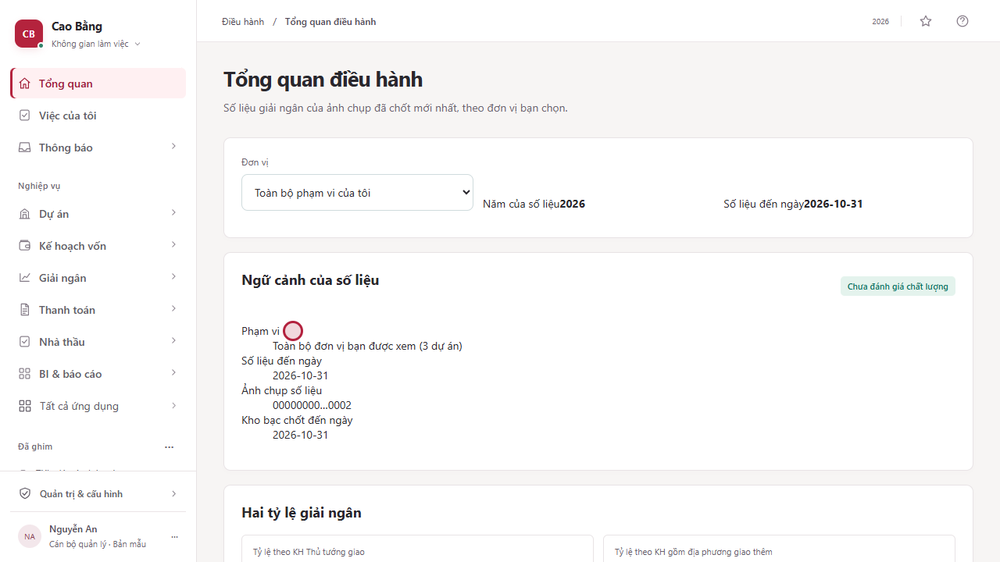
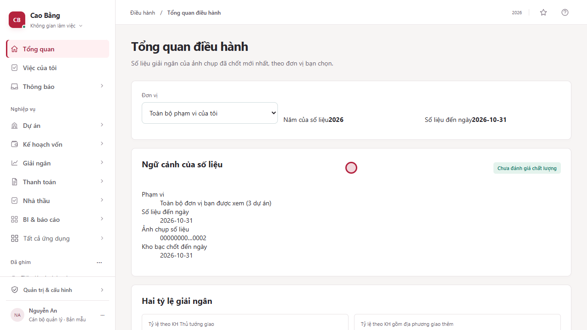
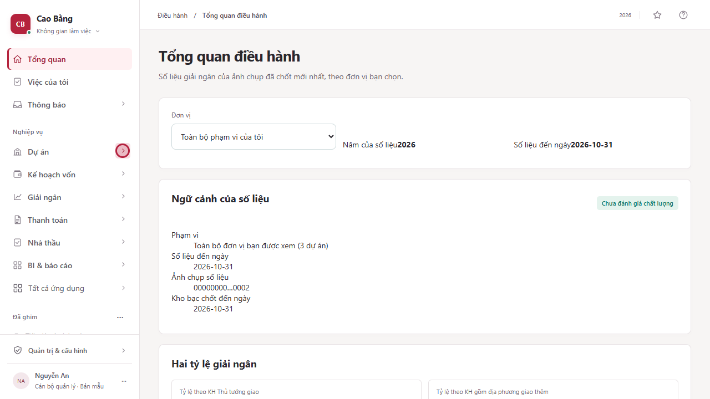
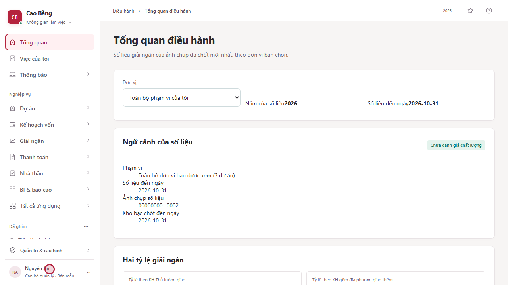

1Đăng nhập, chọn tổ chức và làm quen với màn hình chính
Các bước trong clip (7)
-
1. Mở hệ thống
Mở địa chỉ hệ thống do đơn vị cấp. Khi bạn chưa đăng nhập, hoặc phiên làm việc đã hết hạn, màn hình hiện thông báo Phiên làm việc đã hết hạn cùng nút Đăng nhập. Hãy bấm nút này để bắt đầu.
Đây là cổng vào hệ thống, chưa phải một màn hình nghiệp vụ. Dữ liệu bạn đang nhập dở trong biểu mẫu được giữ lại khi phiên hết hạn.

-
2. Bấm Đăng nhập
Màn hình: IAM-01 · Đăng nhập
Hệ thống chuyển sang trang xác thực của tổ chức, nơi bạn nhập tài khoản và mật khẩu. Mật khẩu chỉ được nhập ở đó, hệ thống MACHVON không bao giờ nhìn thấy mật khẩu của bạn. Xác thực xong, bạn được đưa trở lại hệ thống.
Trong môi trường quay clip, nhà cung cấp xác thực thử đăng nhập ngay nên không hiện trang nhập mật khẩu. Hệ thống thật hiện trang đăng nhập của tổ chức bạn.

-
3. Chọn tổ chức
Màn hình: IAM-04 · Chọn tổ chức
Màn hình Chọn tổ chức liệt kê từng tổ chức mà tài khoản của bạn thuộc về. Mỗi thẻ cho biết tên tổ chức, loại tài khoản và tình trạng. Tổ chức đang tạm ngừng chỉ cho xem và xuất dữ liệu, không cho thay đổi.
Nếu bạn chỉ thuộc một tổ chức thì vẫn qua màn hình này một lần để xác nhận nơi làm việc.

-
4. Xác thực lần hai
Màn hình: IAM-02 · Xác thực hai bước IAM-04 · Chọn tổ chức
Chọn tổ chức Cao Bằng. Vai trò của bạn cần xác thực mạnh hơn, nên hệ thống hiện hộp thoại Cần xác thực lần hai. Bấm Xác thực, rồi chọn lại tổ chức.
Các thao tác nhạy cảm yêu cầu bạn đã xác thực lần hai trong 15 phút gần nhất.

-
5. Màn hình Tổng quan điều hành
Màn hình: HOME-01 · Tổng quan điều hành
Đây là màn hình Tổng quan điều hành của tổ chức bạn vừa chọn. Phía trên là bộ chọn Đơn vị, năm của số liệu và ngày số liệu đến. Phần Ngữ cảnh của số liệu cho biết phạm vi, ngày chốt và ảnh chụp số liệu đang xem. Tiếp theo là hai tỷ lệ giải ngân.
Mọi con số đều kèm ngữ cảnh: phạm vi, ngày chốt và ảnh chụp số liệu, để bạn biết con số này tính từ đâu.

-
6. Thực đơn bên trái
Màn hình: HOME-01 · Tổng quan điều hành
Thực đơn bên trái chia chức năng theo nhóm. Đầu tiên là Tổng quan, Việc của tôi và Thông báo. Tiếp theo là các nghiệp vụ: Dự án, Kế hoạch vốn, Giải ngân, Thanh toán, Nhà thầu, và Báo cáo. Bấm vào tên nhóm để mở các màn hình con. Mục Đã ghim lưu những màn hình bạn hay dùng.
Thực đơn chỉ hiện những chức năng mà vai trò của bạn được phép dùng.

-
7. Góc trên và tài khoản
Màn hình: HOME-01 · Tổng quan điều hành
Ở góc trên bên phải, ngôi sao dùng để ghim màn hình đang xem vào mục Đã ghim, và dấu hỏi mở trợ giúp. Tên tài khoản và vai trò của bạn nằm ở cuối thực đơn bên trái.
Bấm vào tên tài khoản để mở hồ sơ cá nhân, phiên làm việc và đăng xuất.
